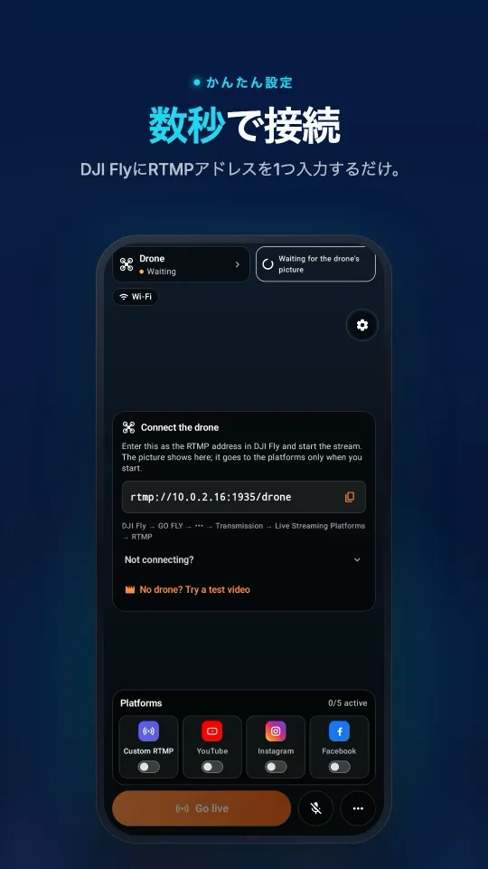
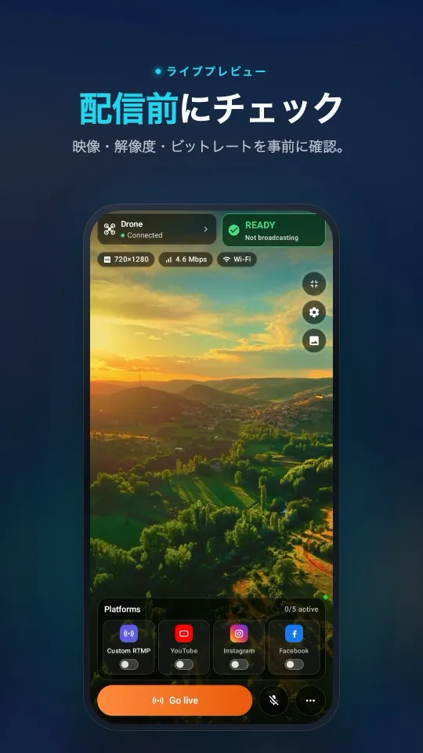
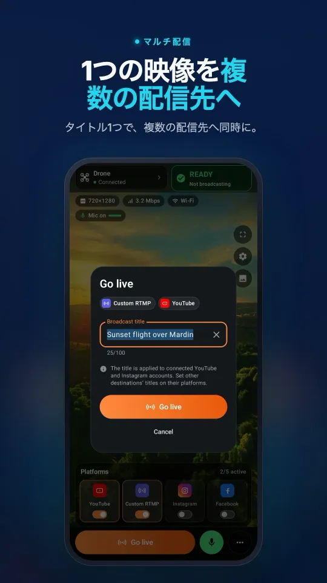
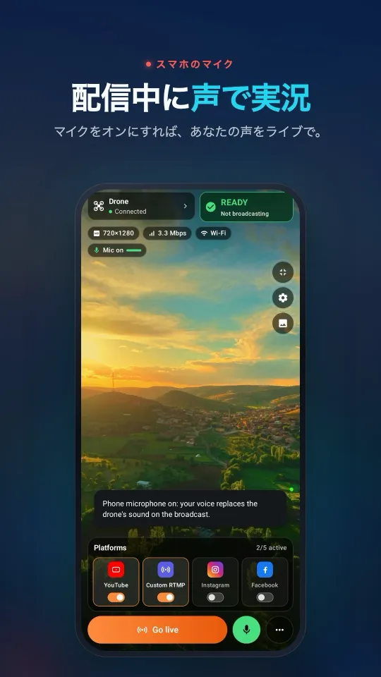
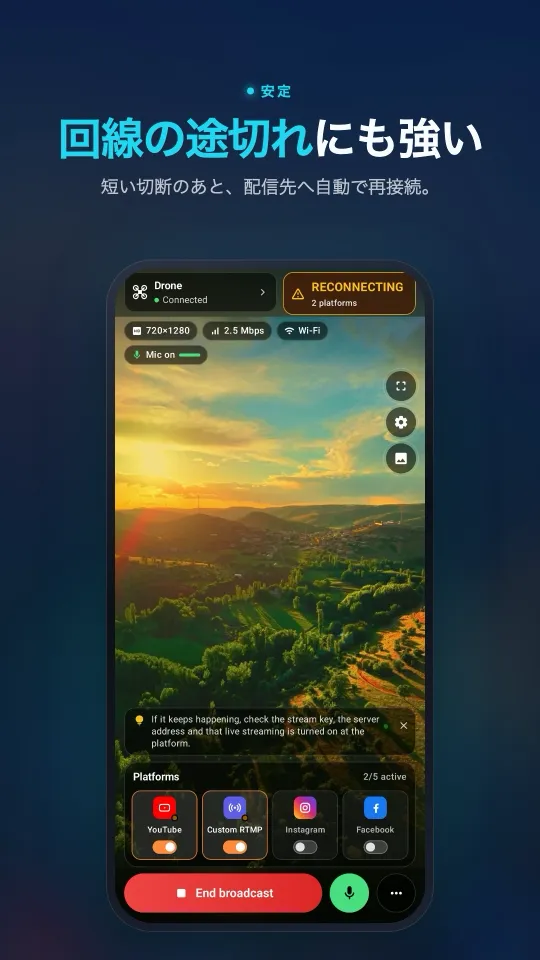

DJIドローンのライブ配信が720pしか出ない・ぼやけるのはなぜ？
カメラは4K以上で記録できますが、ライブ配信の画質を決めるのはカメラではなくDJI Flyです。DJIによるとDJI RC 2とRC Pro 2は720pのみで配信し、ビットレートはAndroidで5または3 Mbps、iPhoneで2または1 Mbpsに固定されています。上限は上げられませんが、最良の設定を選び、ネットワークを安定させ、実際に届いている映像を確認することはできます。
RC 2 で DJI Fly がマイクを求めて配信が始まらない？ マイクを買わずに解決する方法 →
要点
- ライブ配信は機体の録画とは別の、ずっと小さな映像です。解像度とビットレートはDJI Flyと送信機で決まります。
- DJI RC 2とDJI RC Pro 2はハードウェアの制限で720pのみ、DJI RC ProはDJI Fly 1.18.0以降720pのみです。Mavic 4 Proはこれらの送信機を使うため、配信は720pになります。
- DJI FlyはAndroidで5または3 Mbps、iOSで2または1 Mbpsを提供します。ビットレートは手動で変えられないため、RC-N送信機にAndroidスマホをつなぐのがいちばん鮮明です。
- 速く飛んだときのぼやけやブロックノイズは故障ではなく、低いビットレートが原因です。5 Mbps以下ではゆっくり滑らかな動きのほうがずっときれいに見えます。
- DJI Flyが送っていない細部をアプリが足すことはできません。スマホ版Stream My Droneは映像をそのまま転送するので余計な劣化がなく、受信ビットレートを表示します。
送信機別のライブ配信解像度とビットレート
DJIのライブ配信ガイドには2つの上限があります。解像度は1080pまたは720pで、720pのみと明記された送信機は例外です。ビットレートはDJI Flyを動かす端末で決まり、Androidは5または3 Mbps、iOSは2または1 Mbpsです。DJIは、選べるビットレートは映像伝送のフレームレートで決まり、調整できないとしています。
| 送信機 | ライブ配信の解像度 | ライブ配信のビットレート |
|---|---|---|
| RC-N1、RC-N2、RC-N3 + Androidスマホ | 1080pまたは720p | 5または3 Mbps |
| RC-N1、RC-N2、RC-N3 + iPhone | 1080pまたは720p | 2または1 Mbps |
| DJI RC 2 | 720pのみ（ハードウェアの制限） | DJI Flyに表示される選択肢 |
| DJI RC Pro 2 | 720pのみ（ハードウェアの制限） | DJI Flyに表示される選択肢 |
| DJI RC Pro | DJI Fly 1.18.0以降は720pのみ | DJI Flyに表示される選択肢 |
| DJI RC（初代） | ライブ配信非対応 | — |
人気機種での意味：Mavic 4 ProはRC 2またはRC Pro 2で飛ぶため、配信は720pです。Mini 5 Pro、Mini 4 Pro、Air 3SはRC 2では720pですが、RC-N送信機とスマホなら1080pを選べる場合があります。
機種別ガイド：Mavic 4 Pro、Mini 5 Pro、Mini 4 Pro、Air 3S、またはライブ配信できるDJIドローン一覧。
DJI Flyで出せるいちばん鮮明な配信にする6つの手順
- DJI Flyで最も高い設定を選ぶRTMPライブ配信画面で、表示されていればLivestream Resolutionを1080pに、Livestream Bitrateを高いほうに設定します。DJI Flyを更新したら再確認してください。選択肢が変わることがあります。
- RC-N送信機ではAndroidを選ぶRC-N1、RC-N2、RC-N3では、Androidスマホは最大5 Mbps、iPhoneは最大2 Mbpsです。両方あるなら、Androidで飛ばしてもう一方の端末で受信しましょう。
- 受信側を強いネットワークの近くに置く5 GHz Wi-Fiかスマホのテザリングを使い、送信機と受信端末をその近くに置き、ゲストWi-Fiは避けます。データが欠けると映像が止まったりにじんだりします。
- 実際に届いているものを確認するStream My DroneはDJI Flyから受け取ったビットレートを表示し、フリーズの回数を数えます。MacとWindowsでは解像度も表示します。フリーズなしで約5,000 kbpsなら、その構成でDJI Flyが送れる最良の映像がすでに届いています。
- 上り回線が足りているか確かめる受信側は配信先ごとに映像をアップロードし直します。配信先ごとに少なくとも配信ビットレート分と余裕を見込みましょう。5 Mbpsを2か所に送るなら、上りは10 Mbpsを大きく超える必要があります。
- ビットレートに合わせて飛ばす5 Mbps以下では、素早い旋回や木・水面・人混みの上の低空飛行はブロックノイズになります。ゆっくり安定した動きと高めの高度で、視聴者にきれいな映像を届けられます。
スマホでの画面DJI Fly との接続から複数プラットフォームへの配信まで、ひとつの画面で。




ライブ配信の画質はどこで落ちるのか
3つの映像を区別しましょう。機体に記録されるファイル、送信機のライブビュー、そしてDJI Flyが送るRTMP配信です。視聴者に届くのは最後の1つだけで、途中でいくつもの段階を通ります。
- DJI Flyのエンコード：最大の段階です。4Kの録画が1〜5 Mbpsの720pまたは1080p配信になります。
- 送信機から受信側まで：弱い・混雑したWi-Fiでは、欠けたデータは解像度の低下ではなく、止まった映像や灰色のにじみとして現れます。
- 受信側から配信サービスまで：上り回線が配信より遅いと、サービス側でバッファリングが起きたり配信が切れたりします。
- 配信サービスの処理：YouTubeやInstagramなどは、回線の遅い視聴者向けに配信を低い画質へ再エンコードします。
- 視聴者のプレーヤー：プレーヤーは低画質で始まり、回線に合わせて画質を選ぶことがよくあります。評価する前に、最高画質で自分の配信を確認しましょう。
アプリで配信をもっと鮮明にできる？
DJI Flyの配信に含まれていない細部を、アプリが足すことはできません。受信アプリにできるのは、画質を落とさないことと数値を見せることです。
- スマホ版Stream My Droneは、DJI Flyの映像を再エンコードせずそのまま各配信先へ転送するので、余計な劣化はありません。
- Mac・Windows版Stream My Droneは、選んだレイアウト（例：9:16の縦型）を作るために映像を再エンコードします。720pの入力から1080pで出力しても、大きくなるだけで細かくはなりません。
- どちらも受信ビットレートを表示し、パソコン版は解像度も表示します。映像が甘い原因がDJI Fly、Wi-Fi、配信サービスのどれなのかがわかります。
DJIドローンで4Kライブ配信はできる？
DJI Flyのライブ配信ではできません。選択肢は1080pまでで、RC 2、RC Pro 2、RC Proでは720pまでです。配信中も機体はフル画質で録画を続けるので、その瞬間はライブで届け、4Kの録画はあとからアーカイブやハイライトとして公開するのが一般的です。
ドローンのライブ配信で使うモバイルデータ量
| 配信ビットレート | 1時間あたり（配信先1か所） | 配信先2か所 |
|---|---|---|
| 1 Mbps | 約0.45 GB | 約0.9 GB |
| 2 Mbps | 約0.9 GB | 約1.8 GB |
| 3 Mbps | 約1.35 GB | 約2.7 GB |
| 5 Mbps | 約2.25 GB | 約4.5 GB |
通信のオーバーヘッドと音声を含まない映像だけの数値です。スマホから複数の配信先へ同時に送る場合、配信先ごとに別のアップロードになるため、データ量と上り速度は配信先の数だけ増えます。
複数の配信先へ同時に：マルチ配信ガイド。
出典
解像度、720pのみの送信機、ビットレートの選択肢、DJI RC：DJI Fly App Livestream Operation Guides。Mavic 4 Proの送信機：DJIのリンク設定ガイド。2026年11月19日に確認。
関連：DJI Flyのライブ配信エラーの直し方、DJI FlyのRTMP設定、ドローンライブ配信の完全ガイド。
よくある質問
DJIのライブ配信が720pしか出ないのはなぜ？
DJIによると、DJI RC 2とDJI RC Pro 2はハードウェアの制限でライブ配信は720pのみ、DJI RC ProはDJI Fly 1.18.0以降720pのみです。1080pはRC-N送信機とスマホなど、ほかの構成でのみ選べます。
DJI Flyでライブ配信のビットレートは変えられる？
DJI Flyが示す2つの選択肢の間だけです。Androidは5または3 Mbps、iOSは2または1 Mbpsです。DJIは、これらは映像伝送のフレームレートで決まり、それ以外には調整できないとしています。
Mavic 4 Proは1080pでライブ配信できる？
DJIはMavic 4 Proの送信機としてDJI RC 2とDJI RC Pro 2を挙げており、どちらも720pのみで配信します。録画は機体にフル画質で残ります。
速く飛ぶとドローンの配信がブロック状になるのはなぜ？
5 Mbps以下の配信では、木や水面、人混みなど細かい被写体の上を速く動くとデータが足りません。ゆっくり滑らかに飛び、Wi-Fiでデータが欠けていないか確認しましょう。
DJI Flyのライブ配信はiPhoneとAndroidのどちらがいい？
RC-N送信機ならAndroidです。DJI FlyはAndroidで5または3 Mbps、iOSで2または1 Mbpsです。受信するスマホはどちらでも構いません。DJI Flyが送ったものを転送するだけだからです。
DJIドローンで4Kライブ配信はできる？
DJI Flyのライブ配信は最大1080pなのでできません。ライブで配信し、機体の4K録画はあとで公開しましょう。
スマホからドローンをライブ配信
Android・iPhone 版 Stream My Drone は DJI Fly の映像を受け取り、YouTube、Instagram、Facebook、TikTok、Twitch、Kick や独自のサーバーへ、複数同時に送ります。買い切り、サブスクリプションなし。

ほかのガイド
ドローンでライブ配信する方法（5ステップ・2026年版）
ドローンで YouTube、Instagram、TikTok、Facebook にライブ配信する方法。必要なもの、4つの方法、DJI Fly の RTMP 設定を5ステップで、必要な回線速度とトラブル対処もまとめました。
DJI Fly の「Livestream error」：原因とそれぞれの直し方
DJI Fly に「Livestream error」や「Starting livestream failed」と出る？ RTMPS、ストリームキー、アカウント、マイク、ネットワークなど8つの本当の原因と、それぞれの直し方。
ライブ配信できる DJI ドローンは？機種と送信機の完全一覧
DJI Fly でライブ配信できる DJI ドローンを Mini 2、Mini 4K から Mavic 4 Pro、Avata 360 まで一覧に。使える送信機と、720p やマイクの制限もまとめました。自分の機体の確認方法も紹介。
ドローンで結婚式をライブ配信する方法
来られないゲストのために DJI ドローンで結婚式をライブ配信。計画、機材リスト、限定公開の YouTube リンク、スマホかノートPCのセットアップ、守るべき安全ルールをまとめました。DJI RC 2 ならパソコンなしで配信できます。
DJI RC 2 がマイクなしでライブ配信できない？「No built-in mic in current device」の直し方
DJI Fly 1.16 ではマイクなしで RC 2 のライブ配信が始まりません。原因、有効な方法（USB-C マイク、AirPods）、Android スマホで追加機材なしに解決する方法を解説します。
DJI Flip でライブ配信する方法
DJI Flip を RC 2、RC-N3、RC-N2 でライブ配信する方法。スマートフォンとパソコンでの RTMP 設定、手のひら操作やスマホ直接操作との違い、縦型の構図、配信先の確認を解説します。
DJI Lito X1 でライブ配信する方法
DJI Lito X1 を RC 2、RC-N3、RC-N2 でライブ配信する方法。DJI Fly の RTMP 設定、スマートフォンとパソコンでの手順、配信先の設定、実践的なトラブル対処を解説します。
DJI Lito 1 でライブ配信する方法
DJI Lito 1 を RC 2、RC-N3、RC-N2 でライブ配信する方法。DJI Fly の RTMP 設定、スマートフォンとパソコンでの手順、配信先の設定、実践的なトラブル対処を解説します。
DJI Air 3S でライブ配信する方法
DJI Air 3S の映像を YouTube、Instagram、Facebook へライブ配信する方法。送信機を選び、DJI Fly の RTMP をスマートフォンかパソコンにつなぎ、送り出す映像を確認します。
DJI Air 3 でライブ配信する方法
DJI Air 3 の映像を YouTube、Instagram、Facebook へライブ配信する方法。送信機を選び、DJI Fly の RTMP をスマートフォンかパソコンにつなぎ、送り出す映像を確認します。
DJI Mavic 4 Pro でライブ配信する方法
DJI Mavic 4 Pro の映像を RC 2 や RC Pro 2 からスマートフォンやパソコンへ送ってライブ配信する方法。DJI Fly の RTMP、マイクの違い、720p の上限、配信先の設定を確認します。
DJI Mavic 3・Classic・Pro でライブ配信する方法
DJI Mavic 3、Classic、Pro を RC-N1 や RC Pro でライブ配信する方法。DJI RC で配信できない理由、スマートフォンでの受信、パソコンでの RTMP、画質の上限を解説します。
DJI Mini 3 Pro でライブ配信する方法
DJI Mini 3 Pro を RC-N1、スマートフォンの DJI Fly、パソコンの Stream My Drone でライブ配信する方法。初代 DJI RC でこの RTMP 配信が使えない理由も解説します。
DJI Mini 3 でライブ配信する方法
DJI Mini 3 を RC-N1 と DJI Fly からパソコンの Stream My Drone へ送ってライブ配信する方法。DJI RC の制限、720p のライブビュー画質、配信先での公開を確認します。
DJI Mini 5 Pro でライブ配信する方法
DJI Mini 5 Pro を RC 2 または RC-N3 でライブ配信する方法。DJI Fly の RTMP 設定、スマホまたはパソコンでの受信、YouTube・Instagram・Facebook への配信までを解説します。
DJI Mini 4 Pro でライブ配信する方法
DJI Mini 4 Pro を RC 2 または RC-N2 でライブ配信する方法。スマホとパソコンでの設定、DJI Fly の RTMP 設定、マイクの要件、プラットフォームでの確認まで解説します。
DJI ドローンの映像で動物をリアルタイムに見つけて数える
Stream My Drone は、ドローンのライブ映像に映るヤギ、羊、牛、馬、ロバ、家禽を見つけ、配信上に印を付けて数えます。処理はすべてお使いのパソコンで行われます。
DJI Fly の RTMP ライブ配信：設定のすべて
DJI Fly で RTMP ライブ配信を設定する方法。設定の場所、入力するアドレス、送信機とパソコンのネットワーク接続、うまくいかないときの対処法を解説します。
DJI Fly で Instagram にライブ配信できない理由（と解決策）
DJI Fly には Instagram の項目がなく、その RTMP クライアントは Instagram が求める暗号化された RTMPS に対応していません。その理由と、それでも DJI ドローンで Instagram ライブを行う方法を解説します。
DJI ドローンをパソコンの Web カメラにする
Stream My Drone の仮想カメラで、DJI ドローンを TikTok LIVE Studio、OBS、Zoom、Google Meet、Teams 用の Web カメラにできます。設定方法、活用アイデア、トラブル対処を紹介します。
DJI Neo でライブ配信する方法
DJI Neo でライブ配信する方法。配信できる操縦モード（スマホ、RC-N3、ゴーグル）、DJI Fly の RTMP 設定、Stream My Drone で Instagram・TikTok・YouTube に配信する手順を解説します。
DJI Avata 2 でライブ配信する方法
DJI Avata 2 の FPV 映像をライブ配信する方法。Goggles 3 の映像をスマホの DJI Fly に共有し、RTMP で送って、Instagram・TikTok・YouTube でライブ配信します。
DJI Osmo カメラで Instagram や TikTok などにライブ配信する
DJI Mimo は Osmo Action、Osmo Pocket、Osmo 360 の映像を RTMP で配信できます。それを Stream My Drone に送れば、Instagram、TikTok、YouTube に同時にライブ配信できます。
Osmo Pocket 3 で Instagram と TikTok にライブ配信する方法
DJI Osmo Pocket 3 の映像を DJI Mimo から RTMP で送り、Stream My Drone で Instagram、TikTok、YouTube に同時ライブ配信する方法と、ワイヤレス Web カメラとして使う方法を解説します。
Osmo Action カメラで Instagram と TikTok にライブ配信する方法
DJI Osmo Action 6、5 Pro、4、3 の映像を DJI Mimo から RTMP で送り、Stream My Drone で Instagram、TikTok、YouTube、Twitch に同時ライブ配信する方法と設定を解説します。
DJI ドローンで TikTok LIVE を配信する方法
DJI Fly から DJI ドローンの映像を TikTok でライブ配信する方法。TikTok のストリームキーを使う方法と、キーなしで TikTok LIVE Studio と仮想カメラを使う方法、設定と対処法を解説します。
DJI ドローンで Instagram ライブ配信する方法
DJI ドローンで Instagram ライブを始める方法。instagram.com でストリーム URL とキーを取得し、DJI Fly の RTMP 配信を Stream My Drone 経由で送って、Go live を押します。
DJI ドローンで YouTube ライブ配信する方法
DJI ドローンの映像を YouTube でライブ配信する方法。ライブ配信を有効にし、YouTube Studio でストリームキーをコピーして、DJI Fly の RTMP を Stream My Drone 経由で送ります。設定とコツも紹介します。
DJI ドローンで Facebook ライブ配信する方法
DJI ドローンの映像を Facebook でライブ配信する方法。Live Producer で RTMPS のサーバー URL とストリームキーを取得し、DJI Fly の配信を Stream My Drone 経由で送って配信を始めます。
DJI ドローンを Twitch で配信する方法
DJI ドローンの映像を Twitch でライブ配信する方法。クリエイターダッシュボードでストリームキーをコピーし、Stream My Drone にカスタム RTMP の配信先として Twitch を追加して配信します。
DJI ドローンを Kick で配信する方法
DJI ドローンの映像を Kick でライブ配信する方法。Kick のダッシュボードでストリーム URL とキーをコピーし、Stream My Drone にカスタム RTMP の配信先として追加して配信します。
DJI ドローンの映像を複数のプラットフォームへ同時に配信する
Stream My Drone で、DJI ドローンのライブ映像を TikTok、Instagram、YouTube、Facebook、Twitch、Kick へ同時に配信できます。無料で、パソコンの中だけで動き、再配信サービスも不要です。
Stream My Drone と Restream：ドローンにはどちらを選ぶ？
DJI ドローンの映像を複数のプラットフォームへ配信するなら、Restream のクラウド中継と、自分のパソコンで動く Stream My Drone のどちらが良いか。費用、ウォーターマーク、Instagram、縦型映像、それぞれが向く場面を比べます。
NGINX と OBS を設定せずに DJI ドローンを配信する
DJI Fly の映像を OBS に取り込む定番の方法は、NGINX の RTMP サーバー、設定ファイル、メディアソースの組み合わせです。その手間の中身と、アプリ 1 つで済ませる方法を紹介します。